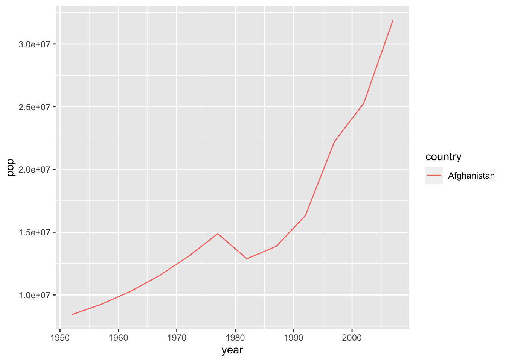
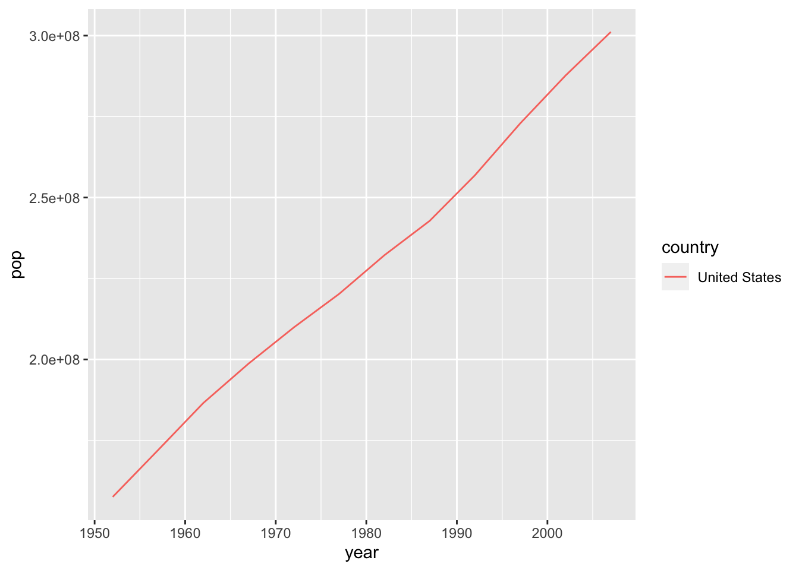

Learning objectives
- Understand the anatomy of a for loop
- Understand the iterative looping variable
- Be able to build a for loop to automate a block of code
We can automate chunks of code using a for loop. We’ve
seen how many tasks are automatically automated using vectorization.
Remember how we can often pass a vector of values as an argument to a
function, and the function will happily operate on each element in
turn.
x <- c(1, 4, 98, 2)
log(x)## [1] 0.0000000 1.3862944 4.5849675 0.6931472R understands that we want to call the log() function on
the first element in the x vector, then call the
log() function on the second element in the x
vector, and so on.
Sometimes vectorization can’t help us automate a set of commands. This can happen when commands are particularly complex, when the commands are using multiple objects at once, or when the next iteration of the block of code relies on the result of the previous iteration of the block of code. In these cases, we can tell R exactly what commands we want repeated inside of a loop.
Here is what a basic for loop looks like.
for(i in 1:10) {
print(i)
}## [1] 1
## [1] 2
## [1] 3
## [1] 4
## [1] 5
## [1] 6
## [1] 7
## [1] 8
## [1] 9
## [1] 10We use the for() function to indicate we are starting a
loop. The { and } mark the start and end of
the block of code that we will repeat over and over.
i in 1:10 means that i will take on the first
value in the 1:10 vector, the block of code will execute,
then i will take on the second value in the
1:10 vector, the block of code will execute a second time,
and so on until i takes on the last value in the
1:10 vector, the block of code executes one final time, and
then the loop is finished. R will now proceed to the next line of code
after the }. We can call this iterative looping
variable whatever we’d like. Often, it is called i
(or j or k if i is already used),
but it could be called monkey and R would be fine with
that.
It’s key to notice that the value of i changes each time
the code block in the loop executes. We say that i is
iterating through the values of the vector. We can use
i (or whatever you’ve called it) inside the for loop code
chunk. Above, we printed out the value of i (see how
i changed?) Below, we print out the ith letter
of the alphabet by using the letters vector
letters # all the letters in the alphabet## [1] "a" "b" "c" "d" "e" "f" "g" "h" "i" "j" "k" "l" "m" "n" "o" "p" "q" "r" "s"
## [20] "t" "u" "v" "w" "x" "y" "z"for(i in 1:10) {
# use square bracket notation to access the ith element in the letters vector
print(letters[i])
}## [1] "a"
## [1] "b"
## [1] "c"
## [1] "d"
## [1] "e"
## [1] "f"
## [1] "g"
## [1] "h"
## [1] "i"
## [1] "j"library(tidyverse)
library(gapminder)##
## Attaching package: 'gapminder'## The following object is masked _by_ '.GlobalEnv':
##
## gapminderplotPopGrowth <- function(countryToPlot, theData = gapminder) {
# this filters data to a specific country
oneCountry <- theData %>%
filter(country == countryToPlot)
# can add some error checking if you want
if(!nrow(oneCountry)>0) { # checks if there are values for country
stop("No Data for this Country, please try again")
}
# this runs the plot
ggplot(data=oneCountry) +
geom_line(aes(x=year, y=pop, color=country))
}# plotPopGrowth("Afghanistans") # gives error
plotPopGrowth("Afghanistan") 
plotPopGrowth("United States")
What if we want to make a plot and then save it for every country?
### LOOPING
countries <- unique(gapminder$country)
for(i in seq_along(countries)){
plotPopGrowth(countries[i])
ggsave(filename = paste0("Figures/plot_",countries[i], ".png"))
}The tidyverse has its own way to do loops
xlist <- list.files(path = "data/2001_mauna_loa_met_data/",
pattern = "*.txt",
full.names = TRUE)
xlist## character(0)column_headers <-
c("siteID", "year", "month",
"day", "hour24", "min",
"windDir", "windSpeed_m_s", "windSteady",
"baro_hPa", "temp_C_2m", "temp_C_10m",
"temp_C_towertop", "rel_humid", "precip_intens_mm_hr")
ml <-
xlist %>%
map_df( ~ read.table(.,
sep = "",
header = FALSE,
quote = "",
col.names = column_headers))
glimpse(ml)## Rows: 0
## Columns: 0This lesson was contributed by Michael Koontz.